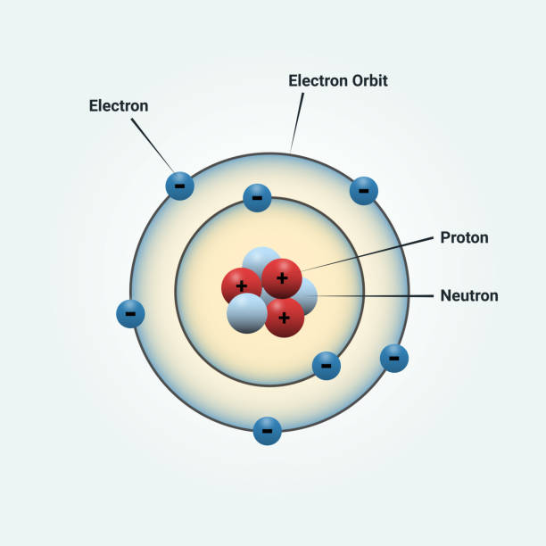

What is quantum mechanics?
Quantum mechanics is the branch of physics that describes nature at the smallest scales—atoms, electrons, and light. It replaces everyday certainty with probabilities and waves.
Key idea: particles can behave like waves and occupy multiple possible states until measured.
This image would show a nucleus with electrons in circular orbits.
Fast facts
- Origins: early 1900s (Planck, Einstein, Bohr, Schrödinger, Heisenberg).
- Math tools: complex waves, operators, and probabilities.
- Everyday tech: LEDs, lasers, MRI, transistors.